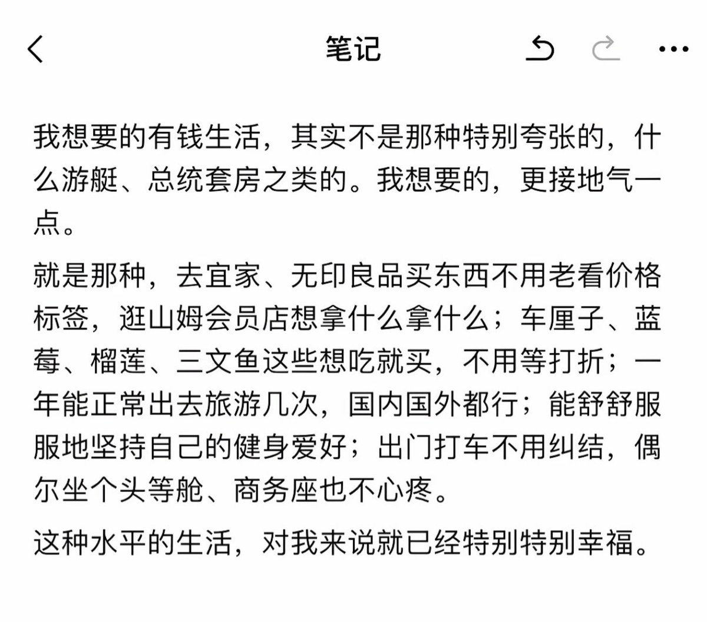

Дистанционизм
@432Ifantrygroup
@A9Less 这个人说的挺有意思。
我认为这个人的消费观在互联网上已经算是比较正常的了，她想要的不是“别人买不起的东西”，而是“我真实需要的东西”。甚至于可以说她对于“有钱”的概念不是通过高级消费来彰显阶级地位的做法，而是类似于共产主义社会中物质的极大丰富条件下对人真实需求的回归。

A9Less
@A9Less
是你想要的生活吗？ https://t.co/MwKPTbsZX4